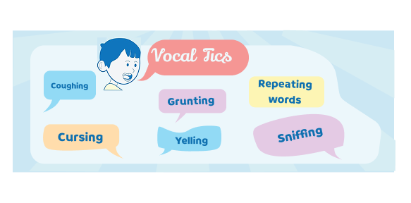
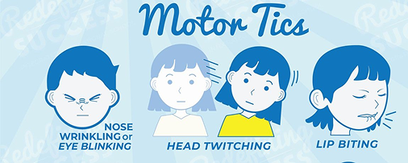

Words, this is vert important Words
Ook bekend als Gilles-de la Tourette syndroom. Het is een syndroom waarbij je last heb van verschillende
soorten tics, zowel bewegingstics als geluidtics vaal in combinatie met leer-slaap- en gedraagsproblemen
Tics zijn plotseling, snelle bewegingen of geluiden die je herhaaldelijk en onwillekeurig maakt. Als je
tics hebt, kun je je lichaam er niet van weerhouden deze bewegingen of geluiden te maken. Ze kunnen in elk
deel van je lichaam voorkomen, zoals in je gezicht, schouders, handen en benen
Iedereen heeft weer andere tics


Eenvoudige tics: Bij eenvoudige tics zijn snelle, herhaalde bewegingen waarbij slechts enkele spiergroepen betrokken zijn. Met de schouders ophalen en in de keel schrapen zijn voorbeelden van eenvoudige vocale tics.
Complexe tics: Bij complexe tics zijn veel bewegingen en spiergroepen betrokken. Springen en het herhalen van bepaalde woorden of zinnen zijn voorbeelden van complexe vocale tics.
Artsen weten nog niet precies wat tourette veroorzaakt. Wel is bekend dat aanleg in de genen een rol speelt Problemen met de manier waarop je hersenen neurotransmitters afbreken (metaboliseren) kunnen ook een rol spelen bij het syndroom van Tourette.
Wil je je kennis over ADHD testen? Doe mee met onze interactieve quiz en ontdek hoe goed je bent ingelicht over dit onderwerp.

All rights reserved to The Quizmaster Oragnization